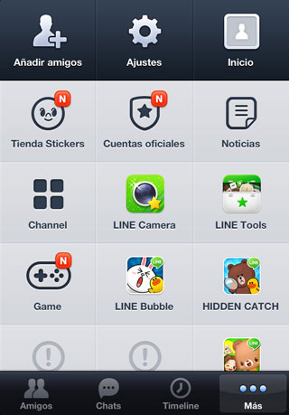

LINE és una aplicació de missatgeria instantània per mòbils i ordinadors. A més de missatgeria de text, es poden enviar imatges, vídeos, missatges d'àudio i fer trucades VoIP. Una altre característica molt singular d'aquesta aplicació (que ara molts altres serveis també han adaptat o estan adaptant) és el seu sistema de "stickers", adhesiu, reemplaçant les tradicionals icones.
A més, conta amb més de 300.000 milions d'usuaris arreu del món.
Funcionament
El LINE funciona com totes les aplicacions de missatgeria instantània.
Quan envies un missatge, aquest és enviat per l'antena de comunicacions que tinguis més a prop, després aquest és enviat als servidors de LINE, i quan ha passat pels servidors, es reenviat a l'antena que estigui més a prop de la persona a qui li hagis enviat el missatge, i aquest és descarregat al seu mòbil. Això funciona tant amb les imatges, vídeos, audios i "stickers" i les trucades.

Funcions i Prestacions
Aquesta aplicació ens permet comunicar-nos amb qualsevol persona del món mitjançant text, imatges, vídeos o trucades gratis.